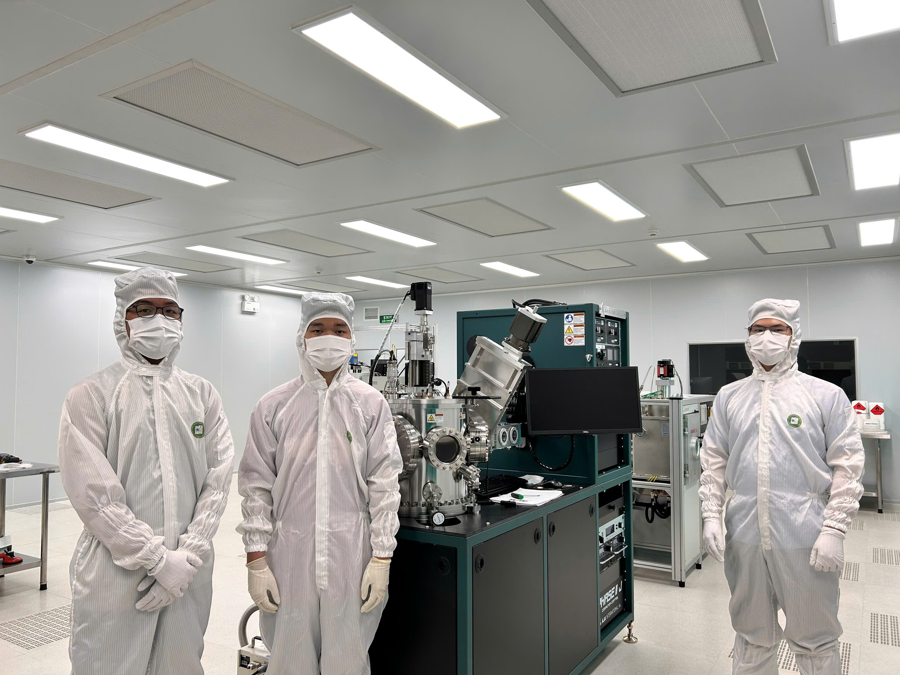
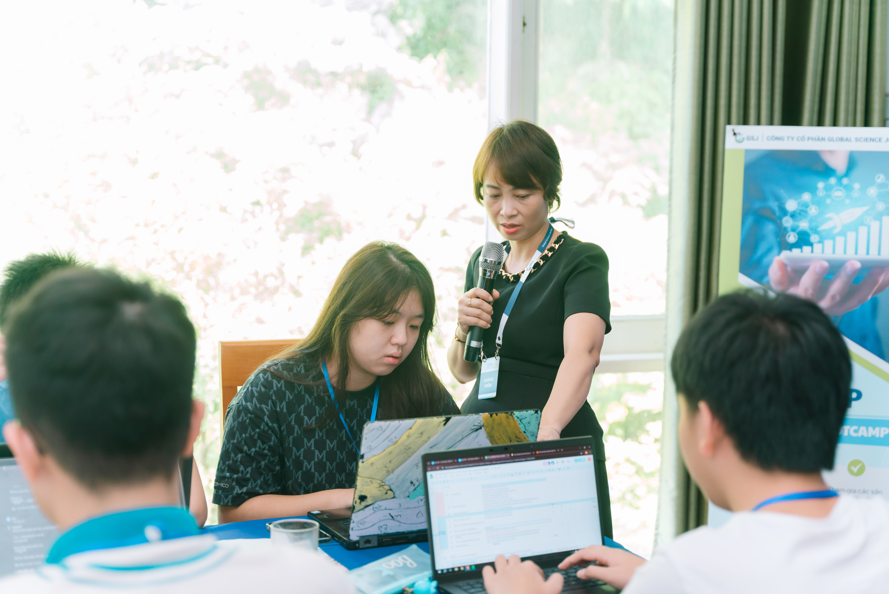
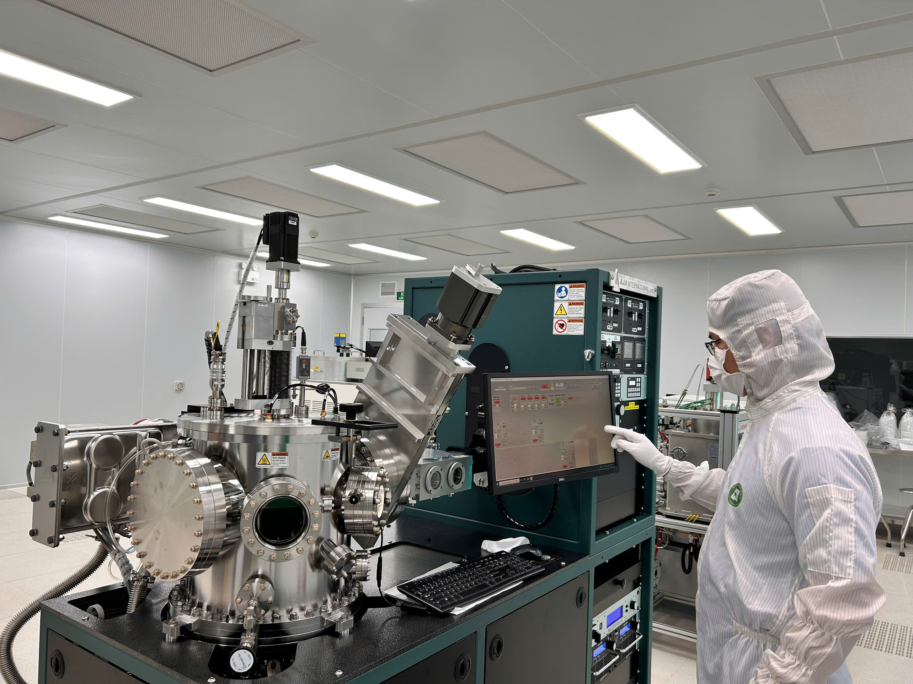
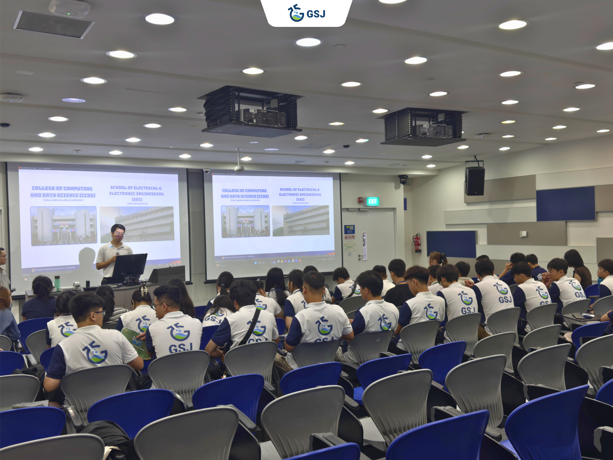
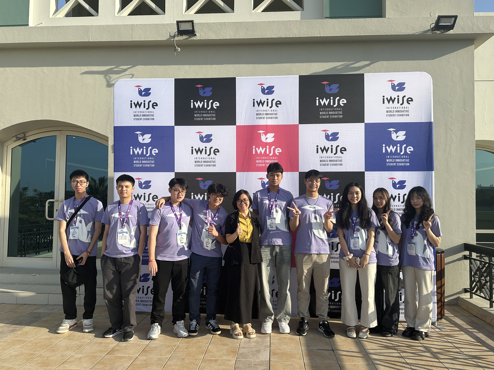
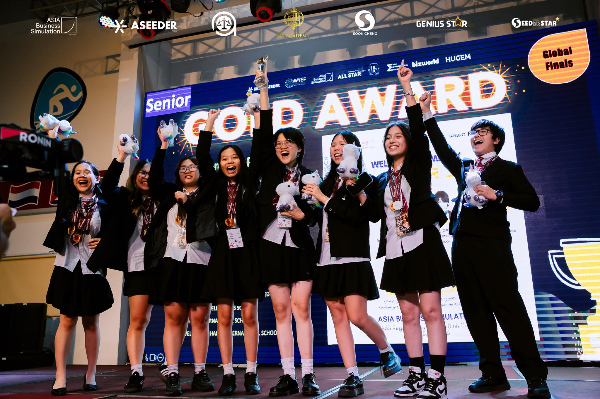
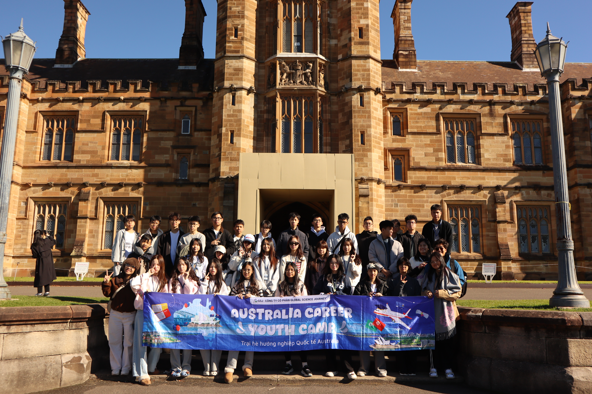
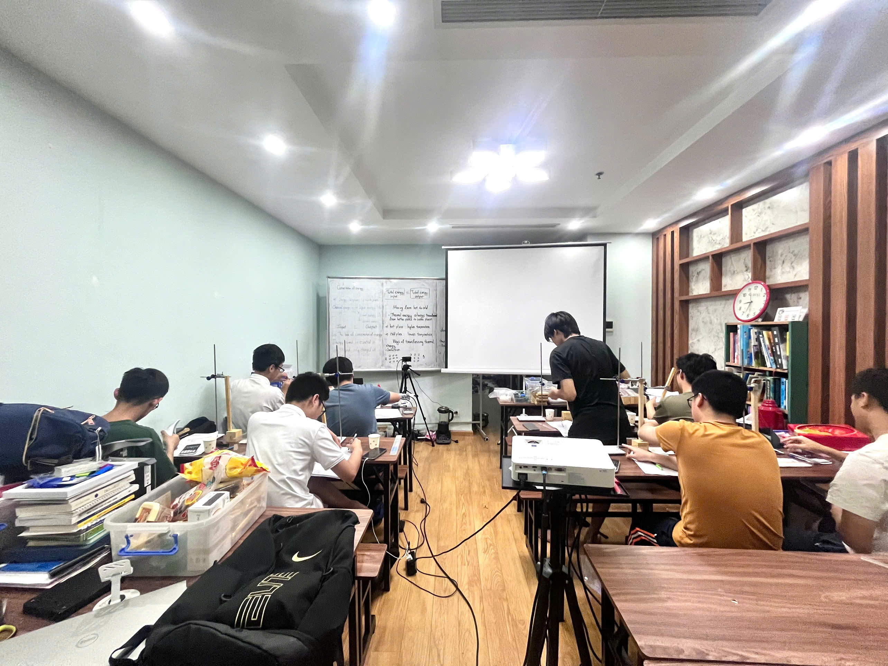
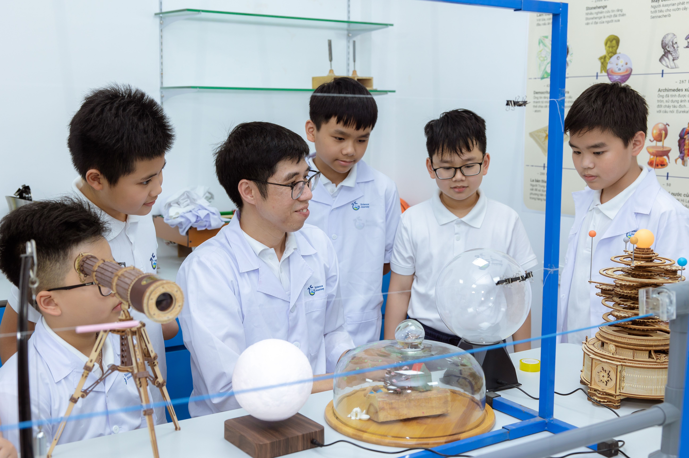

GSJ empowers students to discover their strengths, explore future pathways, and build real-world capabilities through experiential learning, interdisciplinary programs, and global exposure. Learn with purpose. Experience the world. Shape your future.
Researchers, professors & industry leaders worldwide
Cutting-edge projects across STEM disciplines
Students publish, present, or pursue top-tier universities
From intensive research experiences to leadership development and scholarships, our programs are built to challenge, inspire, and elevate.
Build a research project that is entirely yours and ready for publication.
Personalized career roadmap and academic guidance.
Gain practical experience in real professional environments.
USA - UK - Australia - Canada - Singapore - Europe
Compete and succeed on international academic stages.
Learn business through real startup experience.
Immersive international career exploration experiences.
Prepare For Top Universities With Global Academic Standards
Hands-on science and real scientific thinking.
Build a research project that is entirely yours
Disciplines: Business & Economics · Technology & Engineering · Natural Sciences · Social Sciences
The GSJ Scientific Research Program gives students full, structured access to the scientific research process - the way it actually works in academia. Students are guided through every stage: literature review, research design, data collection and analysis, expert panel presentation, and the development of publication-ready scientific manuscripts in both Vietnamese and English.
Research takes place inside real university and institute laboratories including VNU University of Science, Hanoi University of Pharmacy, Hanoi University of Science and Technology, and the Institute of Biotechnology which giving students direct access to professional research environments, not simulations.
Designed for students pursuing serious academic growth, the program helps students develop:
More than a research project - a foundation for future academic work.
Apply Now
Self-Understanding - Career Exploration - University & Scholarship Roadmap
A career orientation pathway of three specialized programs that helps students build the foundation for long-term academic and career decisions - from understanding themselves and exploring their abilities to experiencing real professional environments, choosing a suitable field, and pursuing their dream university with continuous mentorship.
Program 1: Self-Understanding - Motivation - Goal Setting
Program 2: Self-Understanding - Career Exploration - Career Experience - Career Selection
Program 3: Self-Understanding - Career Exploration - Career Experience - Career Selection - Major Selection - University Selection - Profile Development - Scholarship Applications

The clearest career guidance is experience itself
GSJ Internship Programs provide high school students with opportunities to experience professional environments across research institutes, laboratories, universities, and companies. By working alongside researchers, engineers, and industry professionals, students gain practical experience, workplace awareness, and clearer academic and career direction beyond the classroom.
Fields include:
STEM, Business, Economic, Finance...

USA - UK - Australia - Canada - Singapore - Europe
Developing well-rounded students for competitive university admissions
GSJ provides personalized study abroad consulting for students applying to leading high schools and universities across the US, UK, Australia, Singapore, Canada, and Europe.
Rather than building applications around superficial activities, GSJ helps students develop authentic academic experiences through research, competitions, internships, leadership projects, and long-term academic planning.

Compete On International Academic Stages
GSJ Mentoring Programs are designed to guide students in preparing for highly competitive academic, research, and innovation opportunities at both national and international levels, including:
Where ambitious students transform ideas into globally recognized projects.
See Competition Pathways
Learn Business Through Real Startup Experience
A practical entrepreneurship training program designed for students interested in Business, Economics, Finance, and Marketing.
Students learn how startups are built from idea development and market research to business strategy, commercialization, and pitching while preparing for major competitions such as ABS, IEO, HCBC, VEO, HPEC, and WEC,...
Turn ideas into strategies and strategies into impact.
Discover The Program
Expanding Perspectives Through International Career Exposure
GSJ Career Youth Camp provides students with immersive career exploration experiences across leading universities, research centers, and companies in the US, Australia, Singapore, and beyond.
✓ America Career Youth Camp
✓ Australia Career Youth Camp
✓ Singapore Career Youth Camp
Through academic visits, industry exposure, and mentorship from global experts, students gain clearer career direction, international perspectives, and deeper understanding of future industries in science, technology, business, and innovation.
See the world you're about to step into.
Discover The Program
Prepare For Top Universities With Global Academic Standards
GSJ offers personalized preparation pathways for international standardized programs and examinations, helping students strengthen academic performance and university readiness.
Programs include:
Designed for students targeting universities in the US, UK, Singapore, Australia, and beyond.
Achieve the scores that open doors to the world's best universities.
Explore Programs
Hands-On Science. Real Scientific Thinking.
An interdisciplinary science pathway where every lesson includes experiments, STEM projects, or DIY activities, helping students strengthen scientific foundations while developing laboratory skills, creativity, and problem-solving abilities.
Specialized academic tracks designed for students seeking deeper subject mastery through advanced theory, intensive lab practice, and STEM-based projects across each discipline.
Develop scientific thinking, practical skills, and the confidence to explore science beyond the classroom.
Explore Programs
GSJ's Science Research Program guides high school students through a research project in their chosen field, from forming a research question to presenting findings at local and international competitions.
Our programs are open to students in grades 8 to 12 who are curious, motivated, and eager to explore academic research, business, or study abroad pathways.
Students can pursue research across Natural Sciences, Technology and Engineering, Social Sciences, and Business and Finance, among other fields.
Most research projects run over a period of 5 to 6 months, with regular sessions each week guided by a dedicated mentor and teaching assistant.
Yes. Each student is paired with a qualified mentor from an academic institution or professional background relevant to their research field.
Yes. GSJ provides personalized study abroad consulting, supporting students with profile building, essay writing, university selection, and application preparation.
GSJ prepares students for a wide range of local and international competitions, including iCAN, SVIIF, iWISE, ABS, and various scientific research symposia.
Yes. GSJ organizes international career exploration camps and summer programs in destinations such as Singapore, Australia, and America, designed to broaden students' academic horizons and expand their global network.
GSJ designs individualized academic roadmaps based on each student's strengths, interests, and goals, ensuring guidance that is relevant and meaningful to their personal journey.
You can reach out to our team via our website or contact us directly to schedule a one-on-one consultation. Our staff will help identify the most suitable program for your child.
We accept all major credit cards and bank transfers. Payments can be made either in full or spread out over monthly installments depending on the specific pathway you choose.
You can review our program policies, responsibilities, and guidelines HERE.